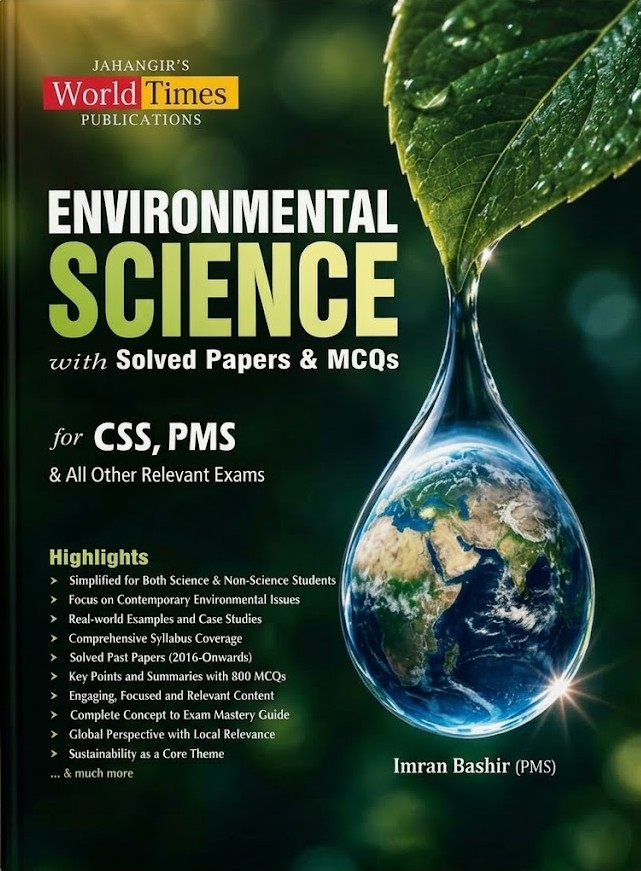

Latest 2026 Edition

Flagship Textbook
Environmental Science (Solved Papers & MCQs)
Interdisciplinary coverage of global and local environmental challenges, climate change, biodiversity, pollution control, international conventions (UNFCCC, Kyoto, Paris Agreement), national environmental laws, solved CSS/PMS papers, and comprehensive multiple-choice question banks.